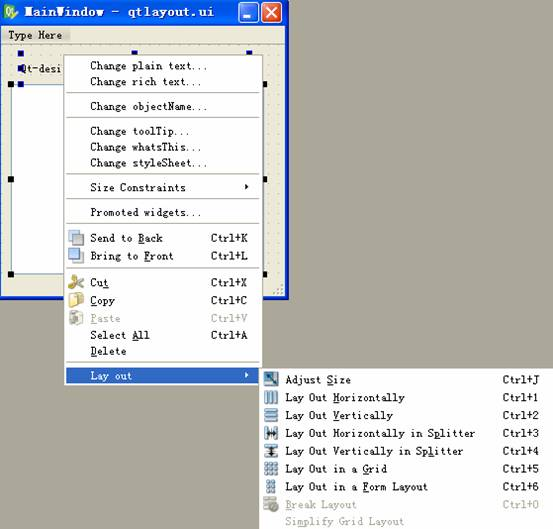
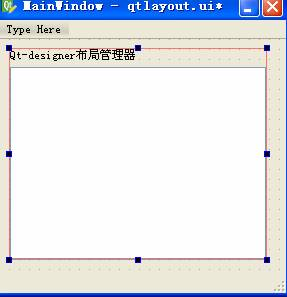
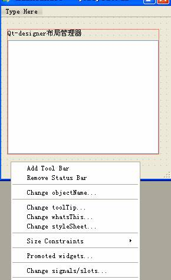

ITEEDU
Qt布局管理器学习笔记
站长原创，版权所有ITEEDU，2011-04-09
学习Qt的时候，参照帮助手册和相关书籍，其中的例子几乎都是手动的编写代码。至于方便设计界面的Qt designer的例子几乎就没有，想在designer中实现子窗口随主窗口大小变化而变化，整的我郁闷了老半天，后来阅读Qt designer英文手册，才找到了解决的方法，在此和大家一起分享。下述文字是帮助的英文翻译和个人感悟。
1.Qt布局管理器的简介
Qt Designer 是一个可视化的基于 Qt 的用户界面设计工具。用来生成 ui 定义文件，而不考虑具体的语言。很好使用，掌握其中的布局管理是学习好Qt Designer的关键。
布局管理器——在创建的窗口中，为了方便地管理其中的控件，而诞生了布局管理器。
将各种控件按照实际需要，放在布局管理器中，可以方便地对其进行管理。此后，窗口大小变化时，其将会自动进行调整变化。
如果你将自己创建的控件放在了布局管理器中，那么再想手工的改变控件的大小时就不有自主了。因为布局管理器已经掌控了你的控件，自动替你进行管理了，不需要你进行移动和调整大小了。
如果你觉着布局管理器管理的不够好，那么你可以通过“breaking layouts”来打破原来的布局，自己重新手工布局也行。
此处，我们重点只是讨论Qt designer的布局管理器的使用。
2.Qt designer 布局管理器的使用方法
首先，选中控件，右击之后，弹出的快捷菜单中包括：
HorizontalLayouts and Vertical Layouts，水平和垂直布局；
The Grid Layout ,网格布局；
Splitter Layouts，分割器布局；
The Form Layout，窗体布局。
其中每个布局效果到底怎么样，我建议大家自己去实践，来回地试一试就会找到感觉。一般常常使用的是HorizontalLayouts and Vertical Layouts和The Grid Layout 。
下边通过一个简单的例子来说明。
首先在Qt Designer中创建一个MainWindow主窗口，然后在其中添加一个Label和一个Table Widget控件，最终效果如图1-1所示。

图1-1 布局前界面
其次，选中两个控件，右击，弹出快捷菜单，如图1-2所示。

图1-2 设置布局的快捷菜单
再次，选择Lay Out Vertically选项，效果如图1-3所示。

图1-3 选择控件布局后
然后，单击选中主窗口(注意是单击主窗口，先取消对所有控件的选择，只选中主窗口)，右击之，在弹出的快捷菜单中选择“Lay Out Vertically”，建立顶级布局管理器。如图1-4所示。

图1-4 设置顶级布局管理器
到此为止，已经完成。保存之后，按Ctrl+R组合键，查看结果，最大化主窗口，观察效果哦。呵呵……
注意，要想达到预想的效果，顶级布局管理器的设置是必不可少的哦！